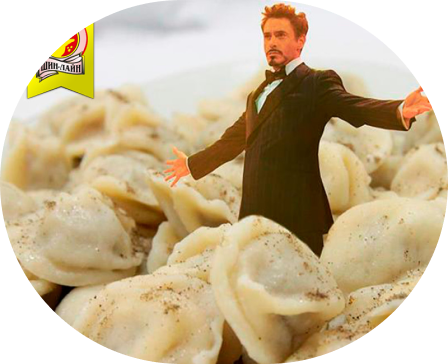

Как приготовить пельмени
Приготовление:
- Приготовьте тесто: В глубокой миске смешайте муку, воду, яйцо и соль до однородной массы. Замешивайте тесто около 10 минут, пока оно не станет гладким и эластичным. Накройте пленкой и оставьте на 30 минут.
- Сделайте фарш: Смешайте мясной фарш с мелко нарезанным луком, солью, перцем и измельченным чесноком. Хорошо перемешайте.
- Раскатайте тесто: Разделите тесто на несколько частей и раскатайте каждую часть в тонкий пласт толщиной около 2 мм.
- Сформируйте пельмени: Вырежьте кружочки из теста с помощью стакана или специальной формы. На каждый кружок положите немного фарша и плотно защипните края, формируя полумесяц.
- Варите пельмени: Опустите пельмени в кипящую подсоленную воду и варите 7–10 минут после того, как они всплывут. Подавайте горячими со сметаной или маслом.

Ингредиенты для теста:
- Мука – 500 г
- Вода – 200 мл
- Яйцо – 1 шт.
- Соль – 1 ч.л.
Ингредиенты для начинки:
- Фарш свино-говяжий – 400 г
- Лук репчатый – 1 шт.
- Соль, перец – по вкусу
- Чеснок – 1 зубчик (по желанию

Ингредиенты для теста:
- Мука – 300 г
- Кефир – 100 мл
- Яйцо – 1 шт.
- Сода – 0,5 ч.л.
- Соль – 0,5 ч.л.
Ингредиенты для начинки:
- Куриный фарш – 250 г
- Грибы (шампиньоны) – 150 г
- Лук репчатый – 1 шт.
- Соль, перец – по вкусу

Ингредиенты для теста:
- Мука – 400 г
- Молоко – 150 мл
- Яйцо – 1 шт.
- Сахар – 1 ч.л.
- Соль – 0,5 ч.л.
Ингредиенты для начинки:
- Капуста белокочанная – 300 г
- Шампиньоны – 200 г
- Лук репчатый – 1 шт.
- Масло растительное – 2 ст.л.
- Соль, перец – по вкусу